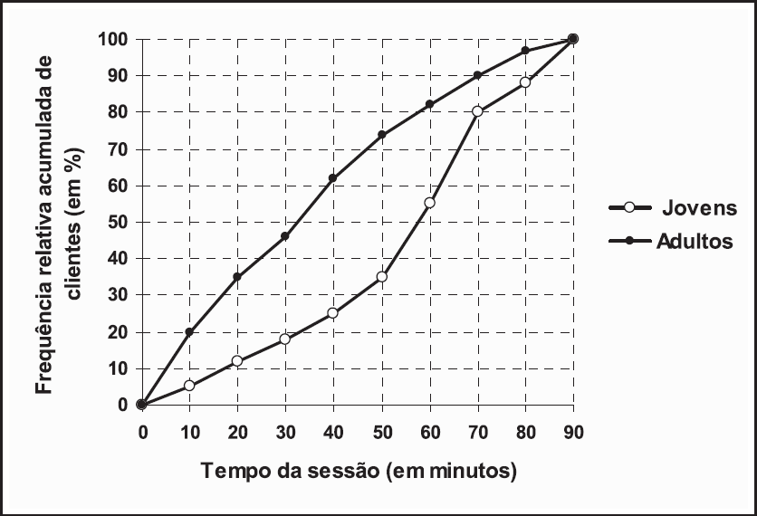

O dono de uma lan house (loja que aluga computadores para acesso à Internet) quer saber se o
tempo de uso da internet por sessão é diferente entre seus clientes jovens e adultos. Para isso,
ele contratou um Estatístico, que coletou uma amostra aleatória de clientes nos dois grupos e
mediu o tempo, em minutos, que cada cliente gastou em sua sessão. Os dados coletados estão
resumidos nas duas ogivas (dois polígonos de frequências acumuladas) mostradas na figura:
Ogivas do tempo de uso da internet a cada sessão, para jovens e adultos

Com base no gráfico, o Estatístico pode concluir que
-
cerca de 80% por cento dos clientes jovens utilizam a internet por 70 minutos a cada sessão.
-
mais de 50% dos clientes adultos utilizam a internet por mais de 30 minutos a cada sessão.
-
menos de 5% dos clientes jovens utilizam a internet por mais de 80 minutos a cada sessão.
-
menos de 10% dos clientes adultos utilizam a internet por até 10 minutos a cada sessão.
-
menos de 30% dos clientes adultos utilizam a internet de 30 a 60 minutos a cada sessão.